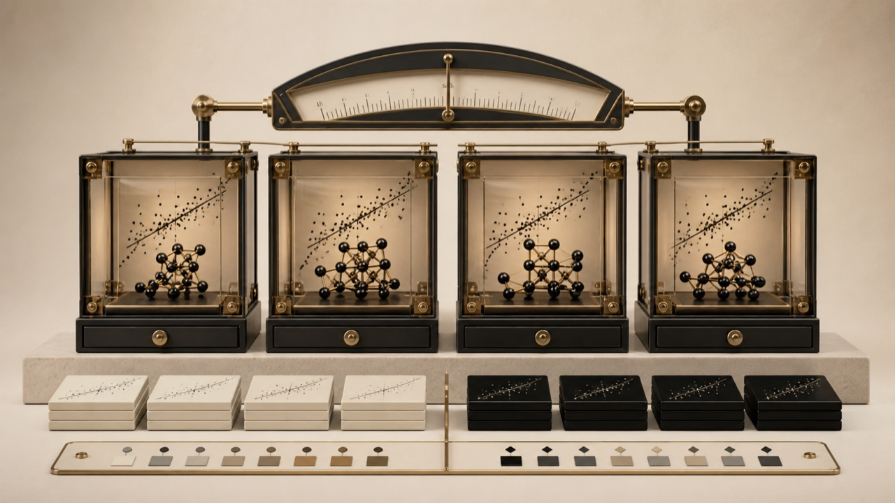

- Scope
- registered datasets
- May call
- locator + validator
- Cannot
- approve a claim
Biology + Computer Science at UNC Chapel Hill
Hi, I’m Zhenpeng.
I build software that helps scientific teams find evidence, compare molecular data, and see when an AI result needs a human decision.
My recent work moves between molecular simulations, scientific ML, and the backend systems that keep evidence and decisions traceable.

Featured interactive projectDynamics Atlas · Agent workflow
See what an Agent can do—and where it has to stop.
01Contract
TaskPacket and molecular datasets define what the Locator Agent may attempt.
The camera tours Contract, Agent, Tool, Gates, Receipt, Human, and Result on a continuous loop. Pause it at any time, inspect the parts, or run a PASS or BLOCK route.
How I approach AI for Science
An AI result only matters if the scientific workflow around it is clear.
- 1 · Scientific object passage · molecular dataset · protein–ligand system · workflow state
- 2 · Bounded model move extract · draft · locate · compare
- 3 · Stopping gate support · compatibility · completeness · state and role rules
- 4 · Durable record support record · EvidenceBundle · controlled state · model decision
The methods change from project to project. I use this same five-part view to show what goes in, what automation contributes, what can stop it, and who owns the final decision.
Four projects, each built around a different scientific decision.
This is the quick comparison. The case studies below show the actual route, stage by stage.
| Project | Decision | Input | Automation contributes | What can stop it | Recorded outcome |
|---|---|---|---|---|---|
| Dynamics Atlas ↓ | Can these sources support one analysis? | TaskPacket + two molecular datasets | Locator suggestion | Six compatibility gates | EvidenceBundle or blocked route |
| HSP90 / LiGaMD ↓ | Is the apparent model improvement stable? | Three replicas + assay pKoff | Four-regressor comparison | Completeness, grouped folds, bootstrap | No model selected on N31 |
| EvidenceOps ↓ | Does this passage support this exact claim? | Versioned passage + context | Candidate field extraction | Text, value, unit, or context mismatch | Review record or unsupported |
| CarePlan ↓ | May this synthetic draft advance? | Synthetic order + versioned state | Typed draft | Eligibility, schema, version, or role | Review-pending state + receipt |
Dynamics Atlas and HSP90 / LiGaMD operate directly on molecular data. EvidenceOps works on scientific evidence records. CarePlan is an adjacent synthetic prototype—not a clinical system.
Selected work.
Scroll through each project to see the input change, the automated step, the check that can stop it, and the result that gets recorded.
Agent routes bounded tool calls
Model suggests or generates
Tool executes repeatably
Rule validates or blocks
State records what happened
Human owns final authority
Jun 2026—Present
Live product loop · Evidence inspection
A claim only advances with exact support.
Unsupported fields do not disappear; they stay blocked for review.
Active stage
Versioned passage + context
01 / 06
Why it matters
A relevant passage may still fail to support the exact wording, value, unit, or condition.
What the system does EvidenceOps takes a versioned passage, retrieves a candidate span, proposes structured claim fields, checks exact support, and records the result for human review.
Evidence and boundary 70/70 fixed public or labelled synthetic cases matched their expected routes; this does not measure open-ended scientific accuracy or production use.
- Fixed cases
- 70 / 70
- Search
- 20
- Extract / validate
- 50
Boundary Public or labelled synthetic inputs; no production or open-ended scientific-accuracy claim.
Feb 2026—Present
Live product loop · Controlled drafting
The AI drafts; software and people control state.
No autonomous approval: the loop ends at review pending.
Active stage
Synthetic order + state
01 / 06
Why it matters
A plausible biomedical draft is not a valid workflow decision.
What the system does CarePlan takes a synthetic order through an eligibility rule, a typed AI draft, schema and state checks, and an authorized reviewer who approves or rejects the final state.
Evidence and boundary 200/200 recorded checks passed across 120 synthetic orders; the public harness calls no model service and makes no clinical or production claim.
- Checks
- 200 / 200
- Synthetic orders
- 120
- Reached review
- 70
Boundary Synthetic control-flow prototype; no patient data, clinical recommendation, autonomous approval, or production claim.
Jun 2026—Present
Live product loop · Agent harness
An Agent proposes a route; six gates decide if it runs.
The locator cannot cross a failed compatibility gate.
Active stage
TaskPacket + two datasets
01 / 06
Why it matters
Two datasets can describe the same protein and still be incompatible for one analysis.
What the system does Dynamics Atlas takes a task contract and two molecular datasets; a Locator Agent may suggest a registered source, while a compiler and six deterministic Gates return an EvidenceBundle, a request for input, or a blocked route.
Evidence and boundary The public harness records 13/13 harness checks, 24/24 machine checks, and 42/42 HSP90 replays; its retrospective development packets are not a held-out Agent benchmark.
- Harness
- 13 / 13
- Machine checks
- 24 / 24
- HSP90 replays
- 42 / 42
Boundary Research collaboration and synthetic public harness; the exposed development packets are not an independent Agent benchmark.
Jun 2025—Present
Live product loop · Scientific ML evaluation
Three replicas become one row before models compete.
The interval crosses zero, so the current result is no selected model.

Active stage
Three replicas / one system
01 / 06
Why it matters
Thousands of simulation frames can still correspond to one experimental label.
What the system does The pipeline keeps three LiGaMD replicas attached to one protein–ligand system, builds one system-level feature row, and evaluates models with entire ligand groups held out together.
Evidence and boundary On N31 / 27 exact-ligand groups, the lowest group-equal MAE was 0.8182, but the paired improvement interval crossed zero; no model was selected and no broad-generalization or physical-koff claim follows.
- Systems
- N31
- Exact-ligand groups
- 27
- Lowest group-equal MAE
- 0.8182
Boundary The target is experimental assay-derived pKoff. The current evidence supports no selected model and no broad-generalization claim.
Where the science comes in.
My current research connects LiGaMD analysis, molecular-data validation, and careful model evaluation.
One evaluated system, not thousands of apparent labels.
At UNC’s Miao Lab, I work on the path from simulation replicas to system-level features and evaluation against experimental pKoff measurements.
Read the HSP90 method note →I’m looking for teams building AI for Science and scientific software.
I’m especially interested in backend AI work where evidence, failure states, and human review have to be visible in the product.
- Typed interfaces · state · retries · permissions · human review
- Tool boundaries · evidence checks · failure records · evaluation units
- Molecular data · simulation features · grouped validation · claim scope
I study Biology and Computer Science at UNC Chapel Hill.
I like working where scientific questions meet software constraints: messy data, limited evidence, state that has to persist, and decisions that need a clear owner.
At UNC’s Miao Lab, I analyze LiGaMD trajectories and evaluate models against experimental pKoff measurements. I also contribute to Dynamics Atlas, a research collaboration examining whether different molecular datasets support the same analysis.
I use AI-assisted coding during implementation. For the components described here as my work, I define the problem, choose the architecture, review failures, and interpret the recorded results. Lab and collaboration context is identified separately.
- Education
- UNC Chapel Hill
Biology + Computer Science
Expected May 2028 - Current research
- UNC Miao Lab
LiGaMD · experimental pKoff
Scientific workflow validation - Engineering focus
- Backend AI applications
Failure handling
Evaluation design - Core toolkit
- Python · SQL · FastAPI
Django · PostgreSQL · Redis
Docker · LangGraph · HPC